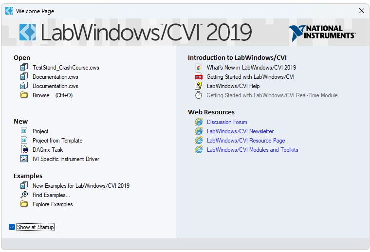
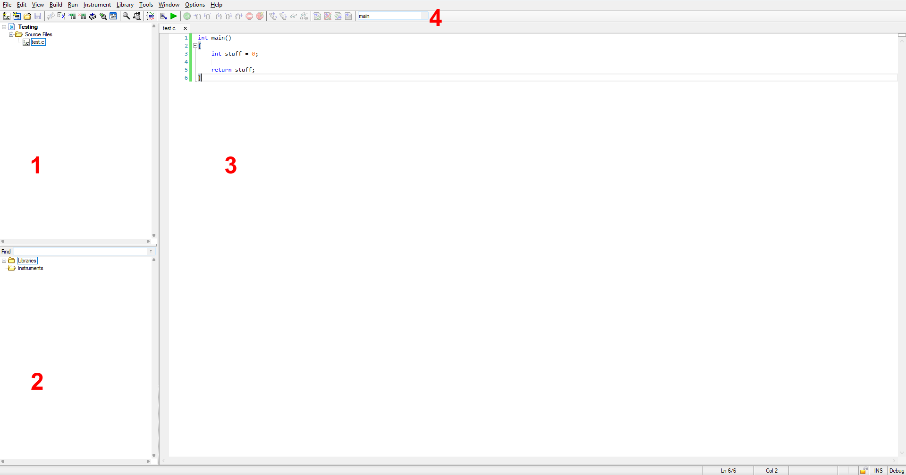

- Generated by
 1.16.1
1.16.1
|
CVI Crash Course
|
Welcome to the Arxtron CVI crash course. The aim of this guide is to succinctly summarize the key functionalities of CVI as used at Arxtron; however, it is not intended to be exhaustive. For further support, you can ask a colleague, or consult the official documentation.
If this is your first time reading the guide, it is recommended that you follow it sequentially and follow along in CVI when applicable.
LabWindows/CVI is an IDE specifically designed for test, measurement, and control applications. While fairly similar to any other IDE with C support, it features a handy GUI editor that can be used to quickly develop a frontend for any test setup.

Take a few moments to familiarize yourself with the general layout of the program.

The interface is divided into the following panes:
If any of these panes do not appear by default, they can be toggled from within the View menu.
Additionally, CVI does not show line numbers by default. It is recommended that you select View > Line Numbers to toggle this setting.